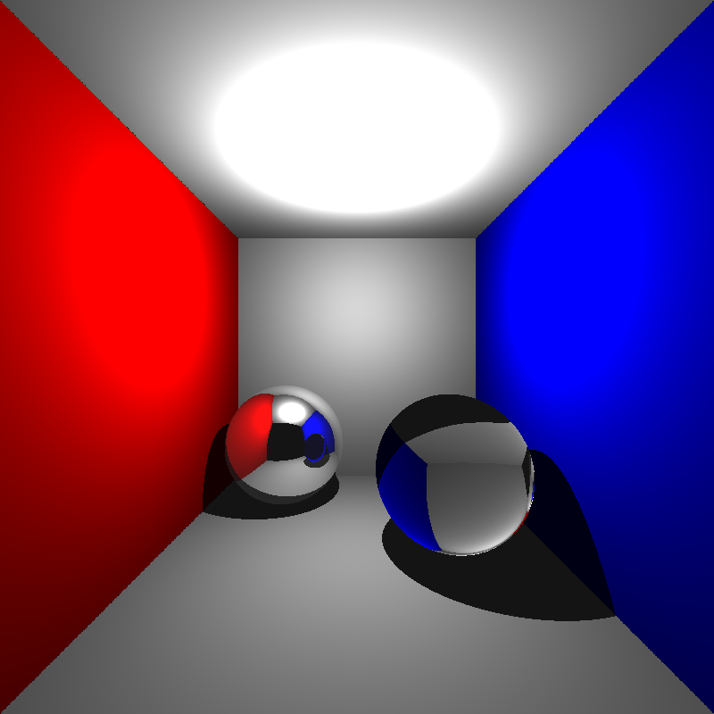
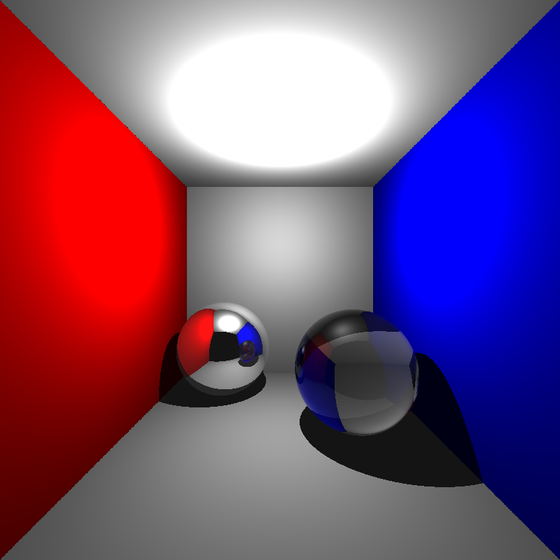
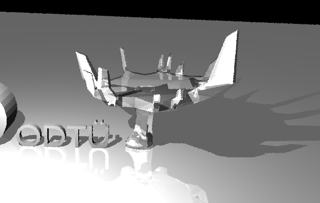
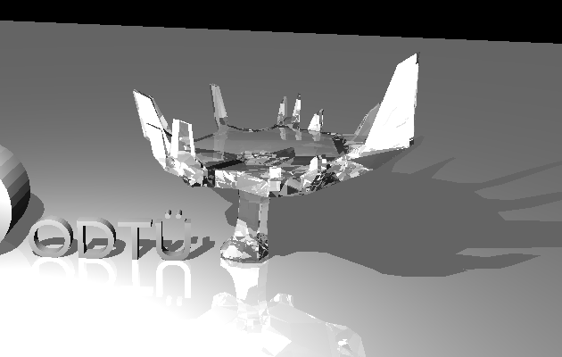
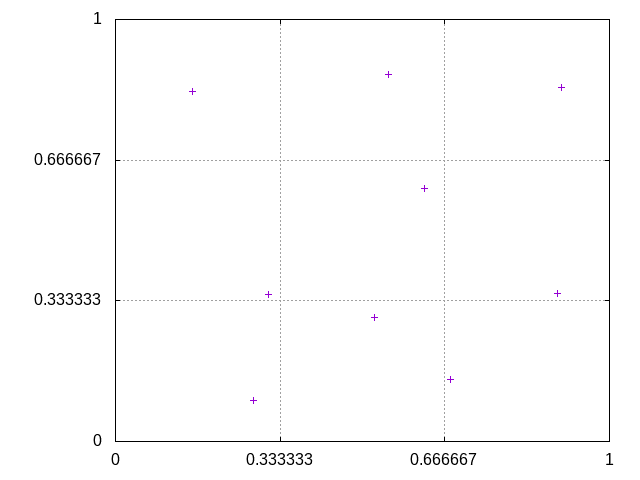
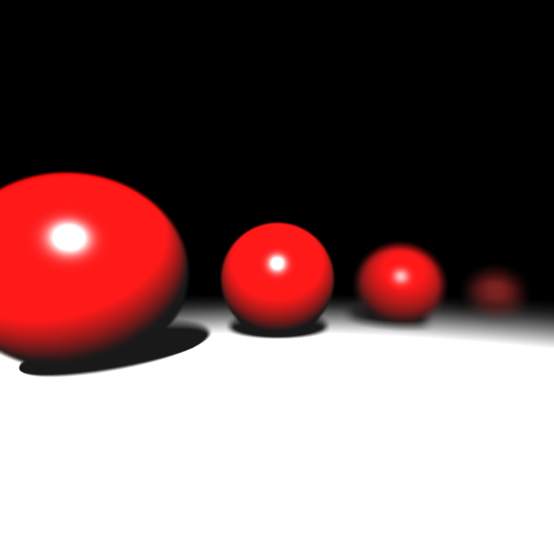
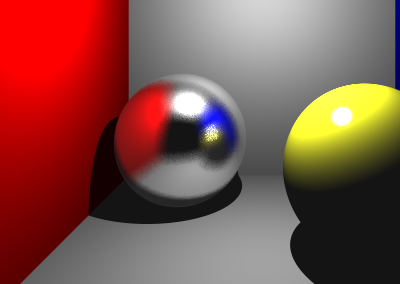
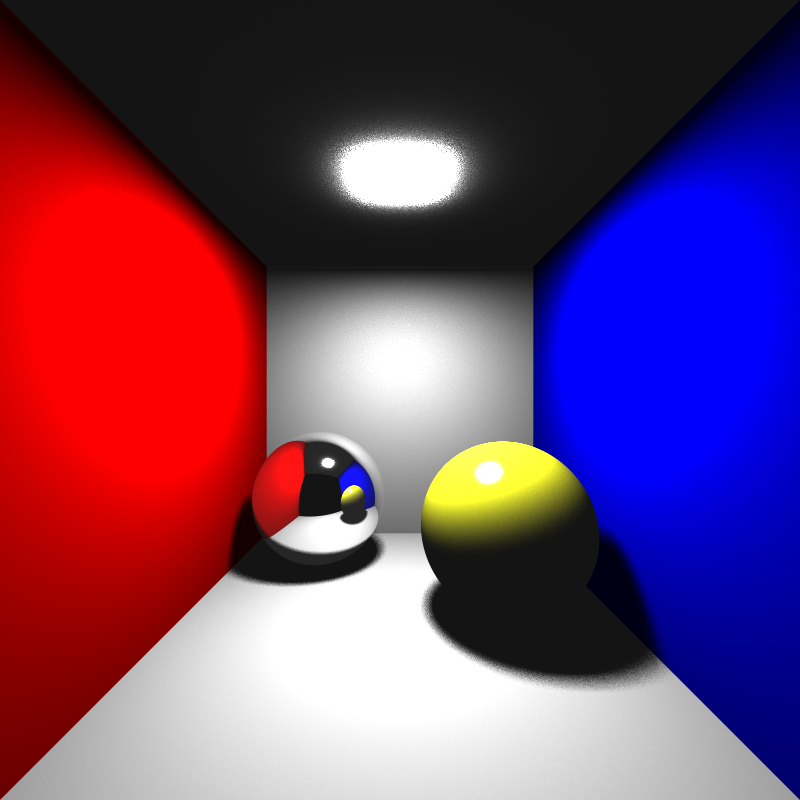

Raiden, Part II: Going Deeper
Posted onIt has been a month since the announcement of my new ray tracer, Raiden. Hopefully, the delay is for a good reason. We have lots of new features to talk about! We will continue from where we left off, addition of refractive surfaces. After we take care of that, we want to improve the render quality. We will achieve this by adding some effects which makes of multisampling.These include anti-aliasing, depth of field, soft shadows and glossy reflections. However, multisampling incurs a good deal of extra runtime cost. Therefore, we first need to speed up the rendering process by using an acceleration structure. There is a lot to cover, so let’s get right in!
Refractive Surfaces
Let’s pickup where we left off, and start with refractive surfaces. This will allow us to render transparent objects, like glass. To be honest, implementing refraction is not that much different than reflection, but there are a few places where things could go wrong. I roughly divided the work into three parts. I then worked through these in the following order:
- Refraction (just the calculation of direction)
- Fresnel computation
- Attenuation
That is a lot of complicated terms if you don’t have a physics degree or computer graphics background, so let’s go over them one-by-one.
Refraction
Quoting from Wikipedia:
In physics refraction is the change in direction of a wave passing from one medium to another or from a gradual change in the medium.
Hmm, right. So as with reflection, it is a change in direction of our rays. But how do we calculate it? Simple. We use Snell’s law. You can follow the Wikipedia link to see the derivation of the formula, but basically it states that sine of refracted ray’s angle with respect to normal divided by sine of incoming ray’s angle is equal to the ratio of two mediums’ refractive indices.
Cool, time to test this out. Since we don’t calculate the reflection/refraction ratio yet, let’s assume we have 100% refraction for now. We will test this with the cornellbox_glass scene, which is basically cornellbox with a glass sphere. This is the result:

Even with only refraction, the sphere resembles glass. It looks a bit odd, because it does not have reflection, so that is what we will fix next.
Fresnel computation
Fresnel equations describe the ratio of reflection vs. refraction, just what we need. There is a problem though, computing them in an exact manner involves solving some differential equations, which makes them costly and complicated. Hopefully, there exists an approximation method which is quite accurate for our purposes and is used widely in computer graphics. It is called Schlick’s approximation:
The calculated value is between 0 and 1, and corresponds to the reflection amount compared to refraction. So sum of reflection and refraction factors is always 1. Using this simple computation, we get the following result:
The difference is astonishing. It really looks like glass now. Just to be bit more physically correct, there is one final step we have to take.
Attenuation
While light is travelling through a medium, its flux gradually loses intensity. Let’s implement that now. We will use Beer’s law here. To be honest, I don’t remember enough physics and calculus to understand the derivation of the formula, but in our case it reduces to where is the attenuation coefficient and is the distance to the point where the ray leaves the current medium. With just a few more lines of code:

It may be difficult to see the difference visually for this scene, but indeed it now feels a bit more realistic. The glass sphere feels like it has more “weight”.
With all three steps completed, we have fully implemented refractive surfaces. There still is a small problem that is more obvious with another scene. Here you see the expected output compared to mine:
| Current output | Expected output |
|---|---|
|  |  |
However, I am currently happy with the result. I defer the bug-hunting to later time.
Getting faster: Introducing BVH
Now that we have all our surface types implemented, we will focus on speeding up the rendering process. If we profile our ray tracer, we will see that the program spends most of its time on intersection tests. This is no surprise. Let’s think about it for a second: we shoot rays from camera through every single pixel on our image, and then for each of those rays we test its intersection with all surface primitives in the scene. It is just too much work.
We know the bottleneck, but how can we speed it up? Acceleration structures come to rescue! To explain in an informal fashion, acceleration structures are special data structures which contain our surfaces in an organized way such that it minimizes the number of intersection tests necessary. There are several approaches each with their pros and cons. I picked BVH (Bounding Volume Hierarchy) due to its relative simplicity and good performance.
BVH is a well-researched acceleration structure and is a good all-around choice. It belongs to object subdivision family of acceleration structures. There are some more advanced variations of BVH which involve surface are heuristics and whatnot, but we will go for the basic vanilla BVH.
The basic idea is to enclose our surfaces with boxes, and before we check the actual intersection with the surface, we first check the intersection between ray and box. If no intersection occurs, great! We do not need to further compute the intersection test only to see it fails. If the ray intersects with the box, then we have to continue on as usual, we did an extra ray-box intersection in the process. But that’s okay. Ray-box intersection algorithm is pretty cheap, and the speed gains is massive.
Let’s illustrate with a simple example. Say we have a triangle mesh, consisting of 10,000 triangles. Assume we just have a single bounding box, which is the tightest box such that it fully encloses the mesh. Now, consider a ray that misses the mesh. We first test with the box, and when we see it fails, we halt the testing process for that ray. We just got rid of 10,000 triangle intersection tests, with the cost of having an extra ray-box intersection test in the successful cases. Don’t you think it is a small price to pay, compared to the burden it takes of our chests? I certainly do.
BVH goes one step further and creates a hierarchy of these bounding volumes, hence the name. It is a tree structure where nodes contain the bounding box and references to two children nodes. The bounding box is split into two (how it is done depends on which partitioning routine was chosen, more on that later.) and they are assigned to left and right sub-trees respectively. We do this until we have bounding boxes which encapsulate only the primitives (i.e. a single triangle of a mesh). These become our leaf nodes.
To sum up simply, BVH is what binary search tree is for arrays. It is simple and effective. No more talking, time to work!
Remember the bunny we have? We will use her for benchmarking our speed. Before we start doing any BVH stuff, let’s see how fast we can currently render:
Render time : 23.031s
# of ray-triangle tests : 1515354264
# of ray-triangle intersections: 95310Among all the rays we test for intersection, only 0.006% actually hit anything. All those intersection tests seem wasteful, aren’t they? Let’s see what we can do.
One box to bound them all
Before we start creating hierarchies of bounding volume, let’s start with creating a single box encapsulating our surfaces. I created a Box class, which holds the two corners of the box with minimum and maximum values. Then I added it as a member variable to Surface class. Now every surface has an associated bounding box with it. We need to modify the intersection functions to only go on if the ray hits the box first. Adding it only involves prepending if (bounding_box.hit(ray)) checks before everything else in the function body. The only thing remaining is the implementation of ray-box intersection test. I will not explain the algorithm here as it is pretty simple, but if you want to read more about it, the idea is same with Liang–Barsky algorithm. Time to test how faster we got:
Render time : 10.547s
# of ray-triangle tests : 666750312
# of ray-triangle intersections: 95310That is more that 2x speedup. Not bad for such a small addition, is it? But wait, there is more.
BVH (a bad one)
I mentioned that there exists different variations of BVH, and these generally differ by their partitioning methods. Having a good partitioning method is essential for cutting down the render time. I think it is obvious why so. If your sub-trees overlap each other too much, it does not make much of a difference from having a single bounding volume. Makes sense, right?
Then the question is, what is a good splitting method? There are some methods which are not too advanced but still yield good results. I will discuss them in a second. But for now, let’s settle for something working rather than something optimized. The first method that came to my mind was to simply split the surfaces by the order they reside on memory. If I have Surface[100] in my scene, first 50 items go to the left sub-tree, and the remaining to the right sub-tree. We will recursively call this splitting routine until we have 0 or 1 elements in our nodes’ bounding boxes. Mind you, this is an awful way to construct the tree, but remember, we are just looking for something working for now. Let’s test this out:
Render time : 4.055s
# of ray-triangle tests : 28219210
# of ray-triangle intersections: 95310
# of ray-sphere tests : 0
# of ray-sphere intersections : 0
# of ray-box tests : 208999586
# of ray-box intersections : 118547974Again, we have cut more than half time. However I wouldn’t rely too much on this statistics, as the result would vary wildly depending on the order of surfaces given in the scene. We can do better.
A better splitting method
Among the various ways to split, I wanted to try out mid-point splitting. The idea is simple:
- Find the mid-point of the longest axis
- Find the centroid of each surface primitive.
- If it is to the left of mid-point, it goes to left sub-tree. Otherwise, it goes to right sub-tree.
Let’s see how it goes:
Segmentation fault (core dumped)That didn’t go as planned. I spent a good amount of time figuring out the problem. It was a case of stack overflow, but why? I think I was not handling an edge case, or did not have a required terminating condition. There were three triangles which all happened to be on the same side of mid-point, therefore it could never reach the terminating condition, no matter how deep the recursion goes. At this point I was pretty demotivated by the lack of success. I tried out a slightly modified version of the said algorithm.
Rather than grouping by centroids’ position compared to mid-point, let’s just split the sorted surfaces list in half, and assign them to left and right sub-trees respectively. This may possibly be slower, but it would create balanced trees as opposed to mid-point splitting. And here, the final version of my BVH implementation:
Render time : 0.264s
# of ray-triangle tests : 725950
# of ray-triangle intersections: 95310
# of ray-sphere tests : 0
# of ray-sphere intersections : 0
# of ray-box tests : 6290170
# of ray-box intersections : 3447573The implementation process was frustrating at times, but it was well-worth the effort. The speedup is really promising. It is almost 88x faster compared to the initial version. We will need that speed when we implement multi-sampling and distribution ray tracing techniques. Now it is time to implement them one by one.
Multi-sampling
Before implementing the cool effects multi-sampling provides, we first have to implement multi-sampling itself. Let’s first briefly explain what multi-sampling is. If we check the main render loop of our implementation, we will see that a single ray is shot through the center of each pixel on our image. That penetrated pixel’s color value is then set to the calculated color value based on the ray’s intersection. We sample a single point on the pixel. Multi-sampling is the sampling process of multiple random points within the boundaries of a pixel, and then casting multiple rays through each of them. Then a color value is computed from all of those rays. There exists different approaches to achieve this (as with everything in computer graphics). I will not spend too much time discussing all the possible approaches, just the ones I chose for my implementation.
The process of choosing random points on the pixel is called sampling, and calculating a single value from all the cast rays is called filtering. I chose jittered sampling and box filtering methods respectively.
Jittered sampling is a method to sample random points, but still have them evenly distributed. The pixel is divided into equal sized sub-pixels, and each point is randomly sampled from a distinct sub-pixel. I quickly sketched out a way to calculate the points given the number of samples, and graphed the result for n_samples = 9:

Box filtering, despite its cool name, is really simple. It is basically averaging the color values gathered from each ray. Higher the samples, better the quality; but also more time to render. You may not notice much of a difference in quality between 9 and 100 samples, and you are right. However, higher number of samples are often necessary to create effects other than anti-aliasing. We will implement a few of them now.
Depth of Field
I am pretty sure you are familiar with the depth of field phenomena, where objects out of focus look blurred. What is being “out of focus” anyway? It occurs due to the nature of lenses our cameras have in real life. Every lens has a focal distance associated with it. It is the distance where objects that far will look sharply. To simulate this effect, we need to modify our camera a bit. Rather than having a point camera, we will have lens with pre-determined aperture size and focal distance values. However we can cheat a little bit. We already know the focal distance, therefore we can just send our rays directed to the focal point. This saves us from the computations in which the rays refracted by lens do not reach the eye anymore.
I mentioned focal point in the previous paragraph. How do we find it? Simple. The ray that goes through the center of lens does not bend, therefore we can use it to calculate our focal point. We just shoot a ray through the center and find the point on that ray where . When we find the focal point, we sample points on our pixel and shoot rays originating from those points directed at the focal point. Finally, as in the multi-sampling section, we average the color values from those rays.
Here we have a new scene to test this with. The sphere second from right is in focus. As you see, the others are blurred properly:

Glossy Reflections
With glossy reflections, we can render imperfect mirrors, like brushed metals. The idea is similar to depth of field, but now applied to reflections. We create the imperfection by redirecting the reflected ray by a small margin. To determine how much to offset we apply, we again sample a random point within a boundary, given within material properties as “roughness”. We only need to find a way to sample this point about the tip of reflected ray. Fortunately, there is a neat way to do this with a bit of linear algebra. We create a new orthonormal basis where the tip of the ray is origin and the direction of the ray is our new axis. We then sample our point in this basis as usual. Finally we transform the point to world coordinates.
Below you will see a render of cornellbox scene, but with imperfect reflections:

Soft Shadows
If you noticed, our shadows are always hard shadows. The reason behind this is that we only had point lights as light sources, therefore each point is either seeing light or it does not. This “binary” situation makes surfaces either fully in shadow (completely dark) or fully bright. As you might have guessed, if we want to add soft shadows to our renderer, we need to implement area lights.
The first idea that comes to mind might be to implement area lights as bunch of small point lights. And it would actually work okay. However, if we really want it to act like an area light, we have to add a good amount of point lights, and it will increase our render time significantly.
There is a much better way to do it. For any point we want to calculate the “shadowness”, we can sample a point on the area light, and continue the calculation as usual. Since we do multi-sampling, for each pixel we have lots of rays going, and they all will have computed the shadow contribution from different points on the light. It is a cheap and quite ingenious way of implementing area lights.
The actual implementation is almost identical to the glossy reflection implementation. As with the former, we create a new basis about the light’s position and after we sample a point, we transform using the basis. Here is how it turned out:

You can see the shadow gradually getting darker at the edges. Also, don’t be fooled by the super bright area on ceiling. It is not the area light itself, it is bright because the area light is too close to it. The light itself is invisible, as it is with point lights.
Conclusion
That was a lot of stuff to digest, so if you are still reading, congratulations. I believe the most important part was the BVH implementation, since we will start to render more and more complex scenes. With the addition of multi-sampling techniques, we got really cool outputs. However, we are still far from photorealistic results.
Some planned features are still missing (i.e. .ply models), but I did not want to delay the blog post any longer. It will certainly be a part of the following post. We will also implement instancing and transformations. Thanks for reading, and keep following for the updates. I promise you won’t be waiting for a month this time!